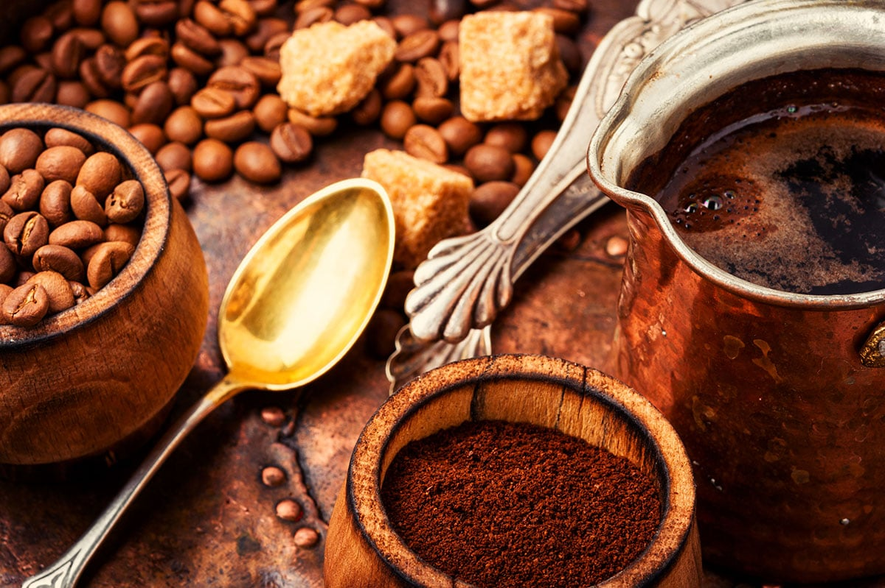

Há 20 anos levando experiências incríveis e bons cafés.
Vamos conhecer um pouco de nossa história

Vamos conhecer um pouco de nossa história

Tudo começou em uma pequena esquina movimentada de Cascavel, onde o aroma de café fresco rapidamente chamou a atenção de quem passava. Nascemos com a proposta de ser mais do que uma cafeteria: um ponto de encontro para conversas, estudos e momentos especiais. Com poucas mesas e uma decoração simples, o espaço já carregava personalidade e acolhimento.
Após conquistar os primeiros clientes fiéis, passamos por nossa primeira expansão. Novos métodos de preparo foram introduzidos, trazendo sabores mais marcantes e experiências diferentes para os amantes de café. Nossa fama começou a crescer, tornando o local uma referência entre estudantes, trabalhadores e turistas.
Com o aumento da popularidade, ganhamos uma identidade visual renovada e um ambiente mais moderno. Além dos cafés tradicionais, o cardápio passou a incluir bebidas especiais, doces artesanais e opções inspiradas em cafeterias internacionais. O espaço se transformou em um lugar perfeito tanto para reuniões quanto para momentos de descanso.
Mesmo diante de novos desafios e mudanças no mundo, encontramos maneiras de continuarmos presentes no dia-a-dia dos clientes. Serviços de pedidos online e entregas foram implementados, mantendo viva a tradição do café de qualidade. A modernização trouxe praticidade sem perder o clima acolhedor que sempre definiu a marca.
Neste ano, celebraremos vinte anos de história. O que começou como um pequeno sonho se tornou um espaço reconhecido pela qualidade, pelo ambiente confortável e pelas memórias criadas ao longo do tempo. Entre cafés, conversas e reencontros, continuamos sendo uma parada especial para todos que entram por nossas portas.